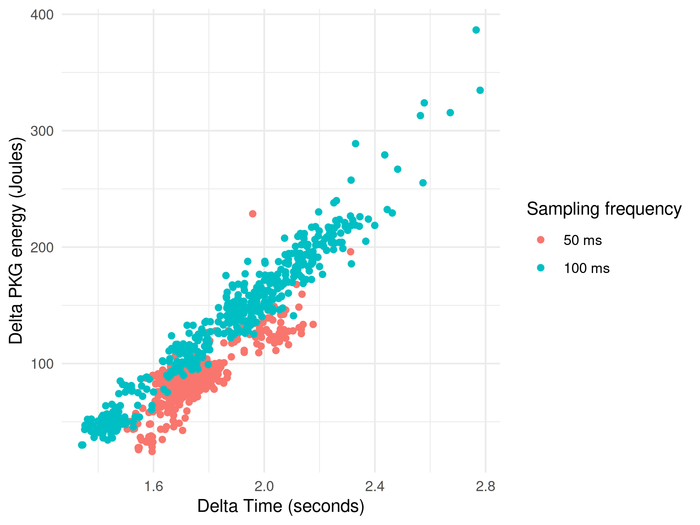
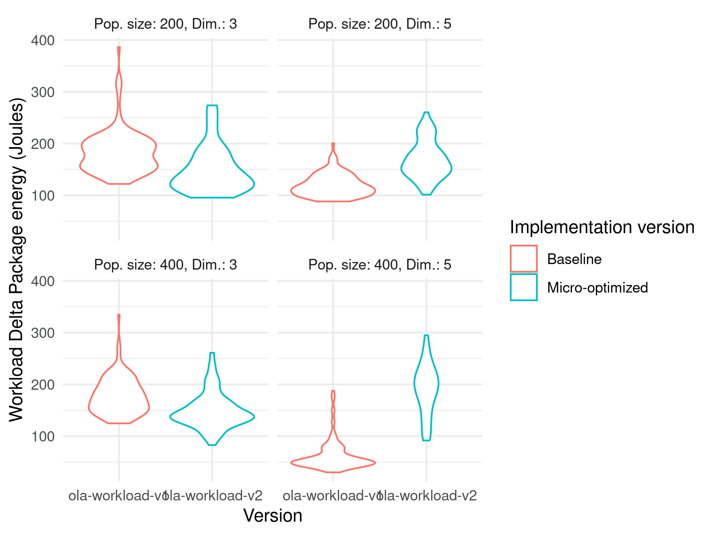
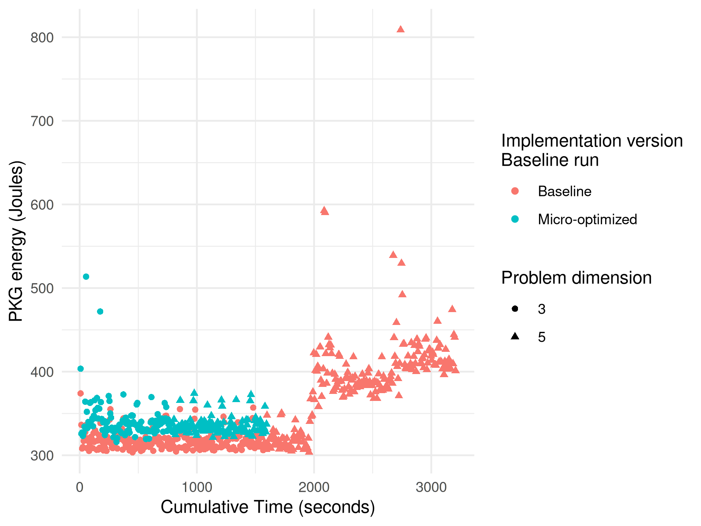

Best practices in measuring energy consumption in
population-based metaheuristics
JJ Merelo, Cecilia Merelo-Molina
Universidad de Granada, Zenzorrito
Modern Taurokathapsia
We need to tame the bull of energy consumption in
EAs
Meet the Brave New Algorithm

Literature-inspired metaphor
Stratified population evolutionary algorithm
α caste → with itself, crossover +
mutation
β only with α → crossover +
mutation
γ, δ, ε → only mutation; γ →
hillclimbing
It's only fitting that we use Greek letters
Crossover was invented in Crete

☝️Take it easy
⏱️ Decrease sampling frequency

✌️ Improve little by little
📏 But always measure after trying to
improve

Ⅲ Adjust your perception of reality
to find out what's happened
